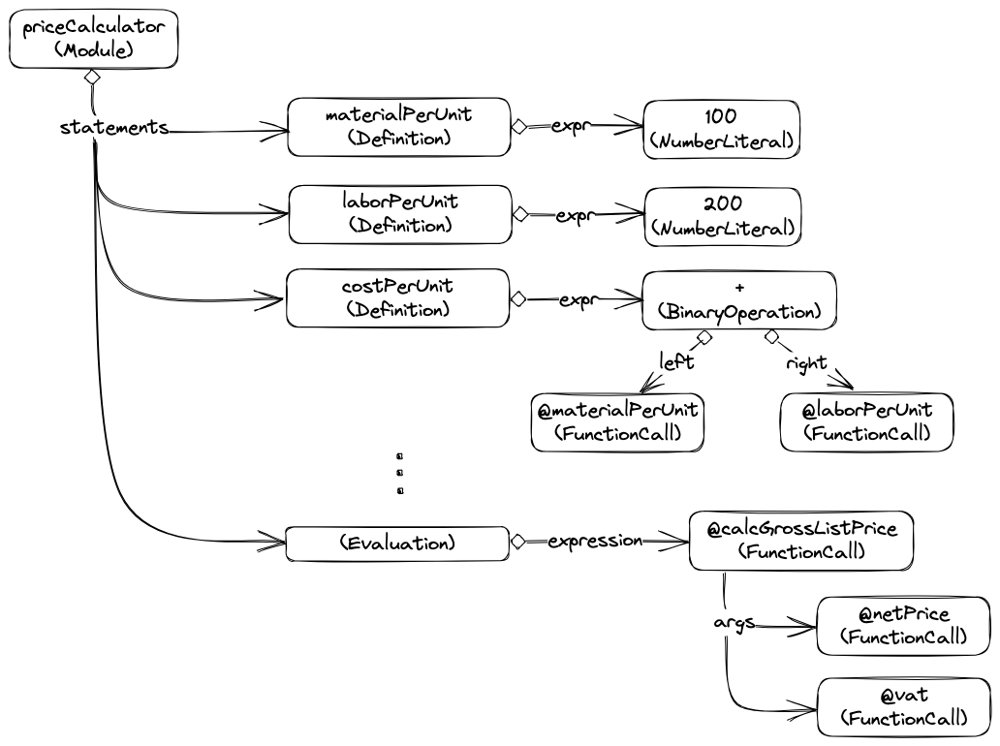
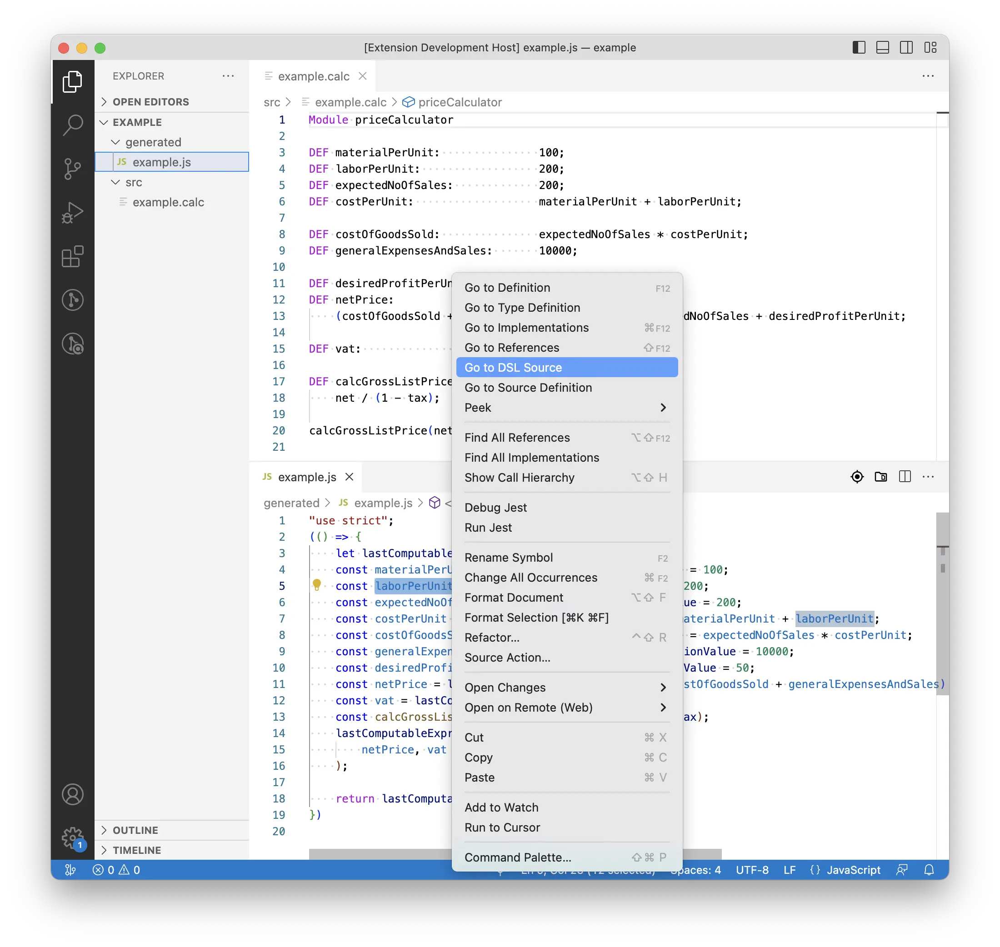
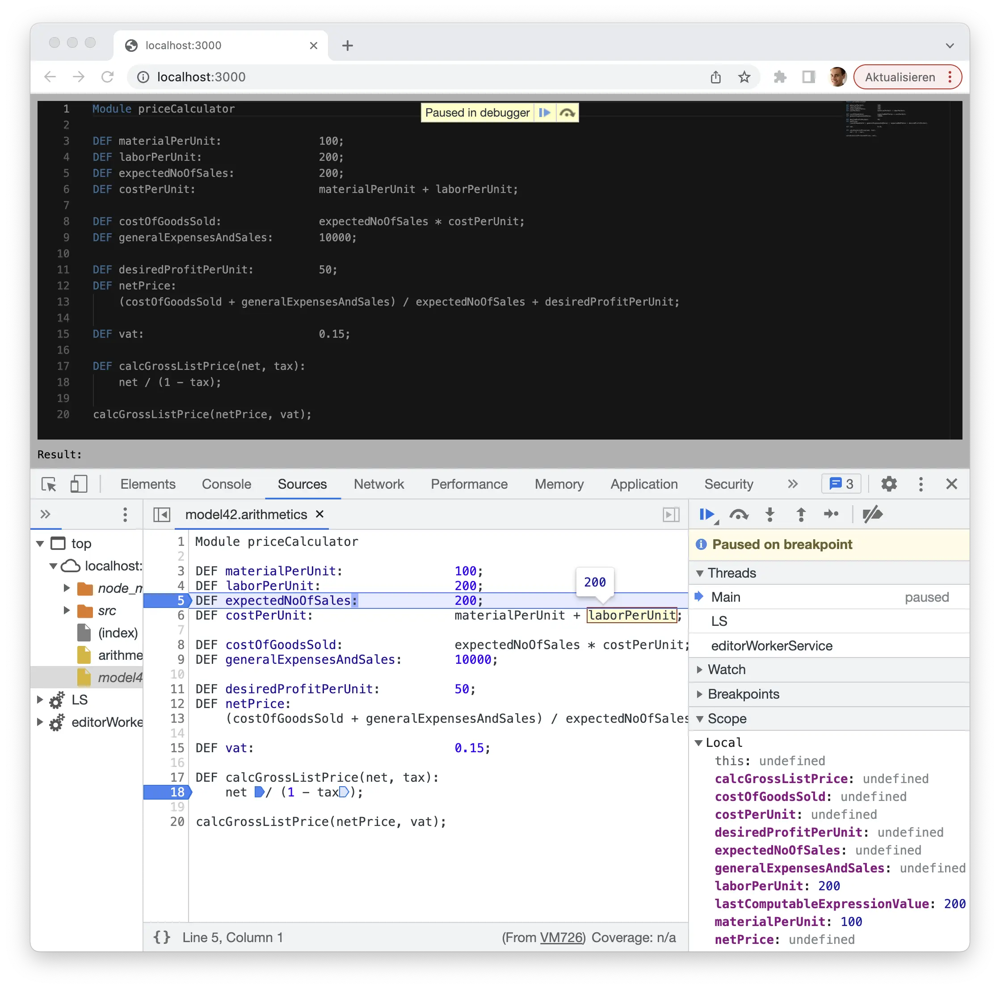
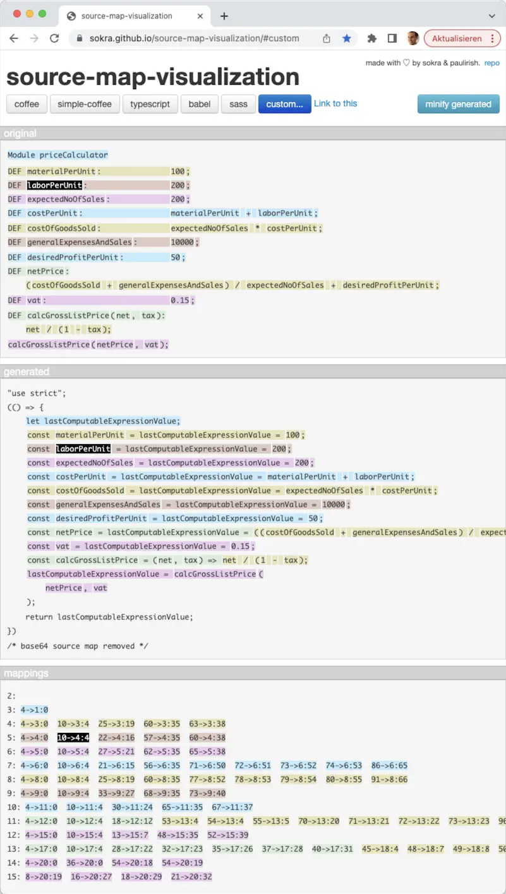

DSL 和 DSL 工具的一个重要方面是代码生成。DSL 本身在形式化、指定和交流内容方面具有优势，因为它们具有特定领域的性质。但是，如果能从指定的内容中推导出实现代码，就能大大提高工作效率。
Resources
- blogs
- github repo:
运行示例
本帖中的运行示例使用 Langium 的 Arithmetics 示例实现。Arithmetics 的 grammar 见 arithmetics.langium
代码生成器的输入示例如下：
|
|
本模块介绍一种非常简单的产品价格计算方法。它包括给变量分配常量值和计算值。最后，一个名为 calcGrossListPrice 的函数被调用，参数是之前定义的 netPrice 和 tax。下图展示了 Langium 在解析输入时创建的抽象语法树（AST）。

现在，让我们将其转化为纯 JavaScript 代码。为了合成所需的代码段，生成器需要访问 AST 并检查相应的部分。让我们通过一个纯 JavaScript 模板来定义生成器的入口函数，如下所示，它会贡献一些静态框架代码：
|
|
让我们也定义 generateModuleContent(Module) 并按如下方式实现它，由于需要循环，所以这次使用经典的字符串连接：
|
|
问题 1：对于多行模板文字，生成的代码将包含由 ········ 在 generateModule() 中指示的空白。我添加了空白，以使生成器符合我们的格式规则。
缺点：会使生成结果变得混乱。
问题 2：访问列表时，我们必须在每个语句的生成片段后插入换行符。此外，我们还必须注意 for 循环前后的换行符。最后，还有 \n 与 \r\n 的问题。
虽然这个问题在这里很简单，但如果出现有条件附加的代码段或者连续多个循环，就会变得相当困难。
问题 3：generateModuleContent() 中的字符串连接没有注意 generateModule() 中调用该函数之前的缩进。
生成的代码将如下所示，具体取决于 generateStatement() 的实现：
|
|
这个示例很好地说明了生成代码中的缩进是如何出错的。周围的静态代码缩进了，但不应该缩进，而括弧中的语句没有缩进，但应该缩进。
Solution A: Smart tagged templates
Solution A：Langium 提供了一个名为 expandToString 的标签函数，可智能处理空白。
在 generateModule(Module) 第 2 行的开头回车之前直接插入 expandToString 引用，可将后续模板转换为标记模板，请参见 generateModule2(Module)：
|
|
这样就得到了下面的生成结果：
|
|
expandToString 实现以下这些功能：
- 在模板的所有非空行中识别和修剪共同的前导空格
- 确定用
${}包装的表达式的偏移量 - 修剪 single leading and trailing line breaks
- 合并模板内的换行符
因此，
- 功能 1 删除了生成模块 2(Module) 中由
········表示的空白，这使得静态代码从偏移量 0 开始，即生成时没有任何缩进。 - 功能 2 将
${generateModuleContent(root)}行内的额外缩进 (␣␣) 应用到替换字符串中的每一行。在我们的示例中，这将产生正确缩进的语句实现片段，而缩进只需指定一次。 - 功能 3 丢弃了紧随开头回车符之后的初始换行符，以及包括结尾回车符缩进在内的尾部换行符。这与生成器入口函数（如
generateModule2(Module)）关系不大，但与从其他标记模板（如generateModuleContent(Module)）中调用的生成器函数（如generateModuleContent(Module)）非常相关，因为周围的换行符将由调用模板决定。最后但并非最不重要的一点是， - 功能 4 使所有换行符都与系统换行符一致。这一点非常可取，因为生成的代码通常会被持久化到磁盘上，并希望与平台保持一致。
现在，让我们再来看看 generateModuleContent(Module) 模块：
|
|
将循环重写为 map;join 表达式后，我们就可以使用标记模板和 expandToString 来实现字符串连接，如下所示：
|
|
连接操作中的分隔符会被功能 4 expandToString 处理，如果在 MS Windows 机器上执行，它会用 \r\n 替换单个 \n。
我们上面的价格计算示例的整个输出结果可能如下，我在这里跳过了缺失的生成器部分。
|
|
除了普通关键字、标识符和运算符的连接外，我的生成器还插入了典型的括号复合表达式，比如在计算 netPrice 的值时。此外，像 calcGrossListPrice 这样的函数调用会在多行中生成，从而使参数更易于阅读。
结论：如果我们想使用 JavaScript 模板表达式而不是普通的字符串连接来实现代码生成器，如果我们想获得正确格式化的生成代码以及正确格式化的模板，那么 expandToString 将为我们提供极大的帮助。
备注：重要的是要保持模板行缩进一致，特别是不要混合使用制表符和空格！VS 代码提供了一个显示空白字符的便捷选项，名为 Toggle Render Whitespace。

Solution B: two stage code generation
试想一下，如果某些行后没有添加内容，您希望跳过这些行的换行符。试想一下，您需要对代码片段的缩进进行配置，或者需要对生成的代码进行后处理和调整，以满足特定条件。在生成 Java 或 JavaScript 等语言时，可以考虑添加导入子句，同时在代码中添加符号引用。生成丰富的表达式语法也可能需要比纯字符串更多的抽象。最后但并非最不重要的一点是，我们可能希望将生成的代码段与它们在文本中代表的源定义区域关联起来。这样的要求需要一种不同的方法。
在本部分中，将重点介绍两阶段代码生成方法，并展示如何将其与 Solution A 中使用的 Tagged Templates 整合在一起。
Generation tree
要满足上述要求，一种可行的方法是将生成任务一分为二，并使用比字符串更具表现力的数据结构来捕获中间结果。任务 1 建立待生成代码的描述，任务 2 则渲染所需的输出结果。
在我们的日常实践中，事实证明树状数据结构非常有用。我们定义了以下数据类型的联盟，并将其称为 Generated 类型：
|
|
生成任务 1 的结果可能已经是字符串类型，例如，如果结果非常短。通常，它的类型是 GeneratorNode。此外，它还可能是 undefined 的。这在顶层没有太大意义，但在将模板的部分内容转移到子例程时却非常有用。未定义的可能结果允许这些函数向其调用者发出信号，表明该函数不会生成任何东西，这与空字符串等其他东西不同。
CompositeGeneratorNode 实现了复合设计模式。该类型的实例是容器，可容纳一系列其他字符串和生成器节点。IndentNode 是 CompositeGeneratorNode 的特化，提供缩进信息。NewLineNode 的实例用于描述换行，它们的严格程度是可参数化的。
在早期的 Langium 中，我们通过以编程方式合成生成器描述来构建代码生成器，例如 Langium CLI 中包含的描述。这样一来，代码生成器的实现就会被大量的 node.append(...) 或 node.children.push(...) 指令所支配，而所需生成的代码结构很快就会被混淆。
通过 tagged templates
在 Langium v1.0 中，发布了另一个名为 expandToNode 的标签函数，也就是我们的解决方案 B。请回顾算术语言示例中的 generateModule2 示例：
|
|
将标签函数替换为 expandToNode 并将返回类型更改为 Generated，就可以轻松将其转换为两阶段生成。
|
|
与 expandToString 一样，模板中会自动删除 ········ 所指示的缩进。此外，还省略了开头 \n 后的初始换行，以及结尾 \n 前的换行和随后的空白。
然后，必须将 generateModule3(Module) 的结果转换为字符串，这就是我上文提到的生成任务 2。为此，Langium 提供了名为 toString(unknown) 的函数。如果调用 toString 时使用了 GeneratorNode 类型的参数，它就会将该参数转换为字符串，否则就会委托 JavaScript 的默认字符串构造函数来处理。
现在让我们看看 generateModuleContent2(Module) 的实现，这也是上次的内容：
|
|
同样，我替换了上面的标记函数和返回类型。不过，我们并不想立即将语句元素的生成结果连接成一个字符串。相反，我们想为每个元素创建生成描述，并将其包含在该模板的结果中。为此，Langium 提供了 joinToNode() 函数。该函数的使用方法将在 generateModuleContent3(Module) 中进行说明：
|
|
joinToNode 的第一个参数是一个要访问的元素集合、一个为每个元素创建生成描述的函数，以及一个可选的配置对象，用于确定分隔符或注册其他回调（如 element filter 和 prefix/suffix 提供程序）。如果输入集合为空，或者所有元素都没有生成，joinToNode 也不会返回任何结果，实际上用 undefined 来表示。
为什么要区分 undefined ？
tl;dr：expandToNode 可以将换行符配置为可省略。如果某行的最后一个替换是未定义的或 GeneratorNode 类型的对象，它就会这样做。如果该行的剩余部分只包含空白字符，则整行将被省略，同时呈现所需的输出结果。
|
|
调用 joinToNode(…) 没有任何结果。不过，它的尾部换行符会被附加到生成的代码中，并产生第一个空行。然后，我们在模板中请求的空行也会被附加到生成的代码中，这样就连续生成了两行空行。不过，我个人（也许你也一样）更倾向于省略包含 joinToNode(…) 调用的整行，即忽略替换后的换行。为了实现这一首选行为，expandToNode 会检查每一行是否有占位符/替换。如果包含替换，则按以下方式评估最后一个替换的值：
如果替换值未定义或属于 GeneratorNode 类型，则配置该行的终端 NewLineNode，使其仅在前一行为非空时才显示为换行符。否则，配置 NewLineNode 为无条件换行。
在我们的例子中，generateModuleContent3(Module) 的语句列表为空，这意味着我们将在第 1 行末尾得到一个换行符，因为该行至少包含静态字符串 let，即非空字符串。准确地说，无论其配置如何，添加到生成描述中的 NewLineNode 都会导致换行。第 2 行的占位符将解析为 undefined 的 “值”。因此，随后代表第 2 行末尾换行符的 NewLineNode 将被标记为 ifNotEmpty，如上所述。在稍后的字符串呈现过程中（任务 2），第 2 行将被评估为空，从而使结束符 NewLineNode 呈现为空。
第 3 行仅包含一个换行符（不包含任何替换），并导致在生成描述中无条件添加一个 NewLineNode。第 4 行要求在生成说明中添加 return- 以及 lastComputableExpressionValueVarName 内容的字符串值。由于模板将在下一行关闭，因此结束符将被忽略。
这种方法还允许对仅包含空白和可能导致 undefined 的替换的行强制执行无条件换行。只需将 ??'' 到（最后一个）替换内容中，或者在行尾再添加一个类似 ${''} 的替换。expandToNode 就会插入一个无条件的 NewLineNode。顺便说一下：后一个选项也适用于包含可能为空的 CompositeGeneratorNodes 的替换。
Benefits
函数 expandToNode 返回 CompositeGeneratorNode 的一个实例，代表某段文本的生成描述。此类对象可任意组合，也可随意操作。元素可以添加、删除或改变顺序。此外，由于复合生成器节点（CompositeGeneratorNode）所描述的某些文本片段的具体缩进最终是在其跨容器（任务 2）的文本渲染时确定的，因此父节点和某些子节点的创建和组合可能完全独立于彼此。一个子节点甚至可能包含在同一生成描述中不同缩进级别的不同位置。此外，在要连接的字符串模板或表达式中，不再需要硬编码的换行符。
此外，生成器实现可以在基于标记模板的实现风格和基于普通方法调用的风格之间来回切换，这取决于哪种风格最适合。由于 CompositeGeneratorNode 定义了更多的方便方法，因此这两者之间的界限并不明显。下面将提到其中一些方法，有关它们的精确定义，请参阅 Langium 代码库：
- append(…Generated[])
- appendNewLine()
- appendNewLineIfNotEmpty()
- appendIf(boolean, …Generated[])
- appendTemplate
<template content> - appendTemplateIf(boolean)
<template content> - indent(Generated[])
- …
在某些情况下，这种方式可能更好。
|
|
The avigation between DSL source and generated code
在 Solution A 和 Solution B 中，已经使 TypeScript 和 JavaScript 中的代码生成变得简单且可扩展，现在是时候来讨论一些实际问题了，即如何处理生成的代码，而不是纯粹的字符串段连接。
这包括在集成开发环境中导航生成的工件及其相应的源代码（例如，用于手动审查），以及在调试生成的代码时自动切换到基于 DSL 的源代码。为了在基于 DSL 的开发工具中启用这些功能，代码生成器需要收集数据，了解哪些源定义生成了哪些代码。
用下面的截图来说明 DSL 源代码和生成代码之间的来回导航。DSL 工具的用户可能想了解代码生成器为某个专用语句生成了什么代码。DSL 开发工具可能会提供这样的审查工具，例如通过选择敏感的上下文菜单项，如第一张截图所示。当然，也可以进行其他集成：在生成的工件中，可能有多个地方会受到某个语句或定义的影响。

另一方面，用户可能希望或需要调查为什么生成器会将某些语句放入生成的工件中，即源代码中的哪些定义。如第二张截图所示，如果有机会让开发工具说明生成代码中某些语句的原因或来源，可能会简化此类任务。

除了这类静态代码分析外，还希望运行生成的代码，在某个入口点设置断点，并通过逐步浏览 DSL 编写的源代码来逐步实现，如下图所示。

在这里，一个装有 Langium Arithmetics 示例语言的 Monaco editor 被添加到了一个普通网站上，并输入了在 Solution A 中介绍的正在运行的示例脚本。基于 Langium 的语言服务器已经处理了输入，确定没有验证错误，并调用了生成器。然后对获得的 JavaScript 代码和相应的源映射进行评估。源映射是根据 JavaScript 代码生成过程中捕获的跟踪数据创建的。
获取追踪数据
为了实现上述功能，我们需要捕获跟踪数据，将源数据中的相关文本区域与 generated artifacts 中的相应文本区域关联起来。在此，我们假定源数据是以人类可读文本的形式（通常是根据某种 DSL）编制的，并保存在 disc 上的文件中（至少与某个 URI 相关联），而 generated artifacts 则假定由 a stream of characters 组成。
回顾本系列的第二部分，我们将代码生成任务分为两项：
- the composition of a generation description
- the rendering of the description into the desired text
引入了一种树形数据结构来捕获描述，它由几种不同的数据类型组成，这些数据类型都归属于联合类型 GeneratorNode。既然已经引入了这样一种专用数据结构，就可以根据自己的喜好为这些数据添加额外的信息。还记得上次的模板标签函数 expandToNode，它在任务（1）中为给定的 JavaScript 模板文字建立了 GeneratorNode 实例，以及生成器函数 generateModuleContent3(Module)：
|
|
无论所提供的模块中定义了哪些语句，所包含的模板都会生成静态代码，而生成的输出则代表模块所包含的语句。这些语句的生成由函数 generateStatement(Statement) 完成，该函数提供给第 4 行的 joinToNode(…) 调用。因此，模板第 3 行、第 5 行和第 6 行的内容只能与 module 相关联，因为这是它们被添加到输出中的原因。与此相反，generateStatement(Statement) 产生的输出可以与 module 关联，因为这些语句包含在 module 中，但更具体地说，它们应该与 module.statements 中包含的相应 Statement 实例关联。为了实现这两个目的，Langium 提供了以下函数：
expandTracedToNode<T extends AstNode>(T, Properties<T>?, number?)joinTracedToNode<T extends AstNode>(T, Properties<T>?)
我们可以使用这些函数捕获所需的跟踪数据，并重写 generateModuleContent3 如下：
|
|
请注意，这两个函数都会再次返回函数。返回函数的签名与 expandToNode 和 joinToNode 的签名完全一致。因此，expandTracedToNode(module) 的结果是一个将模板字面意义转换为标记模板的标记函数。它在内部委托给 expandToNode，并在组成的 GeneratorNode 中注释了模块是相应源对象的信息。
同样的原理也适用于 joinTracedToNode(模块, ‘语句’)。它返回一个与 joinToNode(…) 接口相同的函数。第 4 行中对 generateModuleContent4(Module) 的调用是指：对 module.statements 中的每个元素应用 generateStatement(Statement)，为生成的每个 GeneratorNode 注释跟踪信息，说明生成的部分代表父对象模块中名为 statements 的属性（集合）的第 i 个元素，将所有这些生成器节点添加到一个容器 GeneratorNode 中，并为该容器注释信息，说明生成的部分代表源对象模块中 statements 属性的全部内容。
追踪数据剖析
Langium 会在生成任务（2）中对跟踪数据进行评估和计算。在这种情况下，函数 toStringAndTrace(GeneratorNode) 将取代 Langium 的 toString(unknown)。它返回一个形状为 { text: string, trace：traceRegion }，其中 text 是希望生成的文本，trace 是描述嵌套跟踪区域的复合结构，将生成文本中的区域与源文件中的区域关联起来。数据类型 TraceRegion 的定义如下：
|
|
假定源数据是 Langium 通过解析 DSL 语法表述的文本而创建的有效 AST 元素，AstNode 实例就会被注释为代表相应具体语法节点的对象。后者反过来又提供了其 DSL 文档中的起始和结束位置以及文档的文件 URI。通过这些信息，toStringAndTrace(GeneratorNode) 计算出生成器节点的源区域。在文本渲染过程中，通过记录生成器节点生成文本的开始和结束位置，计算出相应的目标区域。此时，目标 TextRegion 的 fileURI 属性永远不会被设置，因为此时还不知道生成的文本是否会被写入某个文件，如果是，文件的 URI 可能是什么。
让我们来看看以下输入和相应输出的简化示例：
|
|
|
|
下面的截图中展示了所得到的轨迹区域：

- 玫瑰色背景所限定的区域代表跟踪所描述的根跟踪区域，该区域来自 generateModuleContent4(module) 所返回的生成器节点。
- 淡黄色矩形表示的区域来自 generateModuleContent4(Module) 。第 4 行中调用 joinTracedToNode(…)(…) 生成器节点生成的区域。源区域等于对象模块属性 “语句 “中所有元素定义的 “边界框”，目标区域等于第 4 行中 joinTracedToNode(…)(…) 调用 generateStatement(Statement) 的结果所描述的所有文本片段的 “边界框”，加上 { appendNewLineIfNotEmpty: true } 所要求的插入分隔线。包含这些源文本区域和目标文本区域描述的 TraceRegion 实例可通过根跟踪对象的子属性（即 trace.children[0]）访问。
- 蓝色背景区域表示跟踪区域，包括对象模块属性 “statements “条目 0 定义所涉及的源文本区域，以及执行 generateStatement(module.statements[0])后返回的生成器节点所描述的目标区域。跟踪区域描述对象可通过 trace.children[0].children[0] 访问。同样的情况也适用于绿色背景区域，但它们表示 module.statements 的条目 1 的定义和生成文本。该跟踪区域描述可通过 trace.children[0].children[1] 访问。
实际上，这种深度的跟踪数据捕获并不是终点。如果我们继续将 expandTracedToNode(…) 应用于在 generateStatement(Module) 中要区分的所有特殊情况，我们就会得到完全深度解析和细粒度的跟踪区域，直至每个标识符、运算符和数字字面。
将跟踪数据转换为 JavaScript 源映射
如今的浏览器和 VS Code 都支持源映射的概念，以便于调试已编译、转译或最小化的代码。源映射可以作为单独文件附加到生产的 JavaScript 代码中，甚至可以内联到生产的代码中（这通常会大大增加要传输的代码）。因此，为了实现能够调试用算术 DSL 编写的脚本这一目标，我们不仅需要捕获跟踪信息，还需要使用它们来合成符合源映射格式的数据。好消息是我们不需要完全靠自己。https://npmjs.com 上发布的 source-map 软件包可以帮我们完成大部分工作。
在 langium-in-browser-codegen-example GitHub 代码库中，我实现了源地图数据的组合，并将其内联到生成的 JavaScript 代码中。如果内联，源地图数据必须进行 base64 编码–这意味着我们基本上没有机会审查我们实际生成的内容。不过，sokra 和其他一些好心人建立了一个工具 https://sokra.github.io/source-map-visualization/。它允许我们上传生成的代码，包括源地图数据（或将源地图数据作为单独文件上传）。下面，我添加了一张所提供的可视化截图。原始页面甚至允许通过将鼠标悬停在某个区域上，观察其对应区域的高亮度（如果有的话），以交互方式查看源区域和目标区域。
